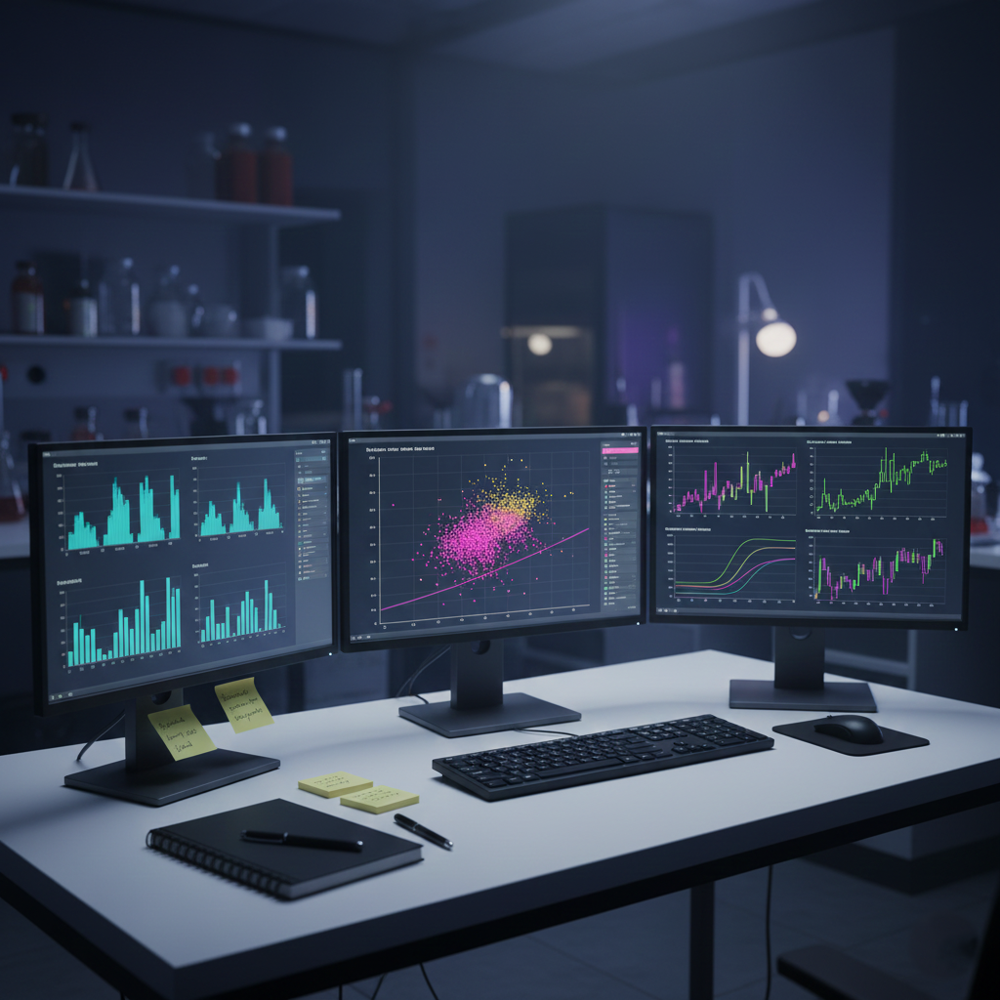
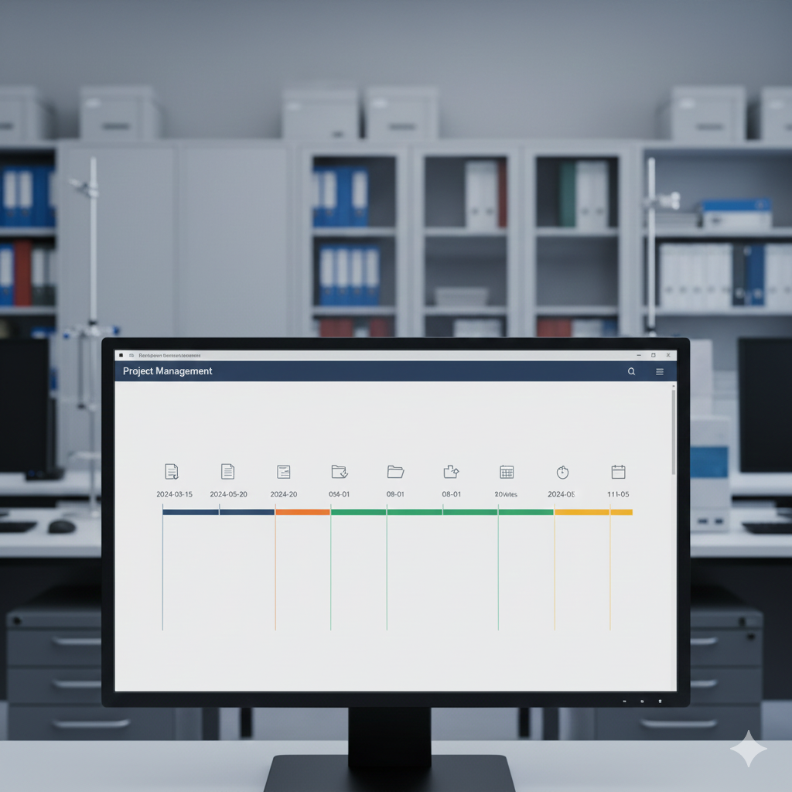
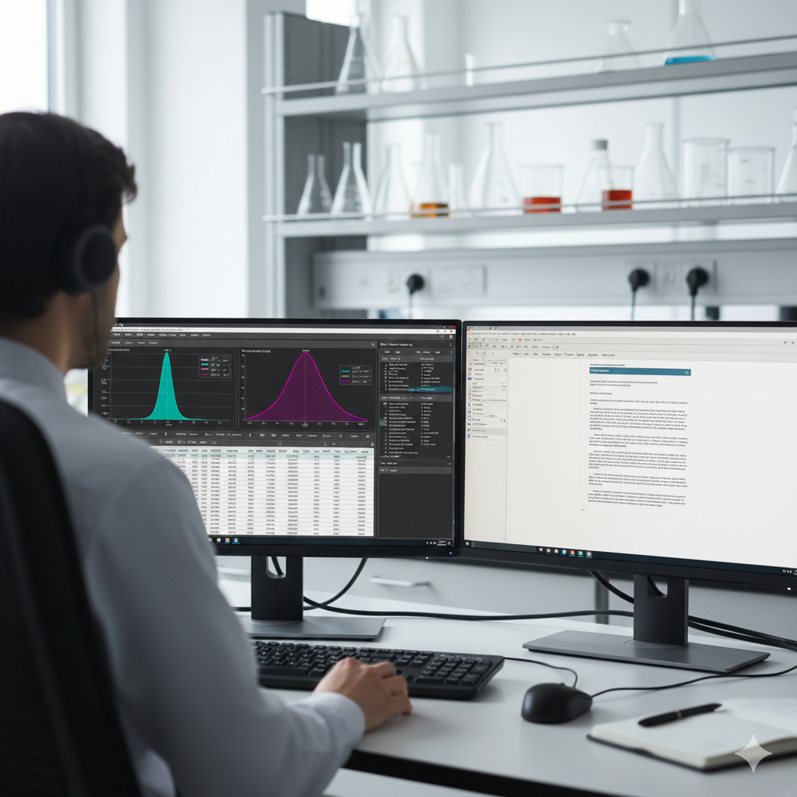

La Perla, Callao
Costa Peruana • UTC-05:00
Disponible las 24h
Área de Estadística y Procesos
App de Evaluación Estadística
CerperStats
Informes generados
Pruebas estadísticas
Plantillas de informes base
Laboratorios
Aplicación desarrollada en Electron + HTML + JavaScript para la gestión, validación y análisis estadístico de datos experimentales generados por los laboratorios de CERPER
Usuarios

Análisis estadístico central

Sesiones, versiones y auditoría de resultados

Flujo guiado, motor Python disponible las 24h